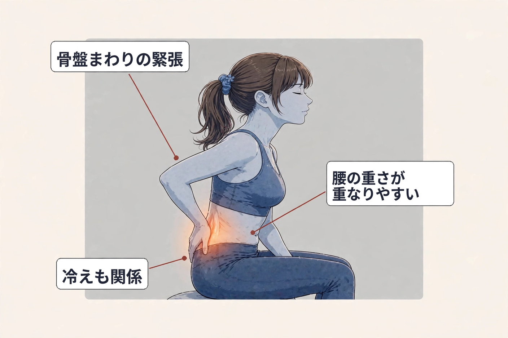

生理期の腰・お腹の重さ
美容整体ステラ・ポラリス東三国｜大阪市淀川区東三国・東三国駅徒歩5分・女性向け
生理期の腰の重さを、温めてゆるめるケアでやわらかく迎える
生理期になると、腰が重くて手で押さえたくなる、下腹が張って姿勢まで丸まってしまう——そんな日は、体をゆるめて過ごしたいものです。生理期は骨盤まわりの巡りが変化し、腰や下腹に重さを感じやすくなると言われています。姿勢の崩れや冷えが重なると、その重さはさらに感じやすくなります。このページでは、生理期に腰やお腹が重く感じる背景と、温めてゆるめることを目指す当サロンでのケア、ご自宅でできるセルフケアをご案内します。生理のたびに腰やお腹が重く、仕事や家事のペースが落ちてしまう方も少なくありません。重さの感じ方は周期ごとに違うことも多く、その日の体と相談しながら過ごすことが大切です。
ご予約はこちら（Coubic）こんなお悩みありませんか
- 生理期は、腰を手で押さえたくなる重さがある
- 下腹が張って、姿勢が丸まりやすい
- 腰の重さで、仕事や家事の集中が続きにくい
- お腹や腰を温めると、ほっと楽に感じる
- 生理期は肩や背中まで固まる感じがする
- 脚が冷えて、重だるさが増す気がする
- 横になって休むと、少し落ち着く
当てはまる項目が多いほど、生理期の体の変化に、姿勢の崩れや冷えが重なっている目安とされています。生理期は無理をせず、体を温めてゆるめることが基本です。次のセルフチェックで、姿勢の傾向を確かめてみましょう。
簡単セルフチェック（姿勢の丸まりチェック）
椅子に座って、背中の丸まり具合を確かめる簡単な方法です。
- 椅子に浅く座り、いつもの姿勢で背中の形を意識します。
- 次に、骨盤を立てて座り直し、背筋の伸び具合の違いを確認します。
- いつもの姿勢で腰が丸まっている、立て直すと腰が重く感じる場合は、骨盤まわりの緊張が重なっている目安と言われています。
※これは診断ではありません。ご自身の状態の傾向を知る目安としてお使いください。
生理期の腰・お腹の重さの原因と仕組み
生理期の骨盤まわりの変化
生理期は、骨盤まわりの巡りが変化し、腰や下腹に重さを感じやすい時期と言われています。骨盤の内側の巡りが滞ると、その重さは腰の重だるさとして感じられることがあります。図1のように、腰を押さえたくなる姿勢は、骨盤まわりに負担が集まっているサインでもあります。

図1 生理期に腰へ負担が集まりやすい姿勢と、骨盤が整った姿勢のイメージ。体の状態には個人差があります。
姿勢の丸まりと腰の負担
下腹の重さを感じると、体は自然と前かがみになり、背中が丸まります。丸まった姿勢では腰まわりの筋肉が引き伸ばされたまま働くため、重だるさが増しやすくなります。骨盤を立てた姿勢との差を知ることが、腰の負担を減らす第一歩です。重さをかばう姿勢が続くと、腰まわりの筋肉は固まりやすく、さらに重く感じる循環に入ることがあります。やさしくゆるめることが、この循環をほどく助けになります。
冷えとの関わり
お腹や腰が冷えると、巡りが滞り、重さの感じ方は強くなりやすいと言われています。生理期はとくに冷えを感じやすい時期で、脚の冷えとも重なります。温めることは昔から大切にされてきた基本のケアで、体をゆるめる入口になります。
全身の緊張の広がり
腰の重さが続くと、体は無意識に他でかばおうとして、肩や背中まで緊張が広がることがあります。生理期に全身が固まる感じがするのは、そのためとも言われています。腰まわりだけでなく全身をゆるめる視点が、生理期のケアには大切です。
セルフケアで足りる場合・サロンケアが向く場合
重さが軽く、温めたり休んだりすると落ち着くことが多い場合は、まずご自宅でのセルフケアを続けて様子を見る方法があります。一方で、生理のたびに腰の重さがつらい、姿勢まで崩れて全身が固まる感じがする、温め方やゆるめ方を知りたいという場合は、サロンでのケアが向いている目安になります。サロンでは、腰まわりを中心に全身をゆるめ、施術後に「腰が軽くなった」「体が温かい」と感じやすい状態を目指します。体調が優れない日は、無理をせずご相談ください。生理の時期は体調に合わせて内容を調整しますので、当日の様子をお気軽にお聞かせください。
当サロンでのケア
当サロンの生理期ケアは、「腰まわりを温めてゆるめ、全身の緊張をほどく」ことを目指す組み立てです。まず骨盤の傾きと腰まわりの張りを一緒に確認し、部位と目的に合わせて3つの手技を組み合わせます。
美容整体：骨盤の傾きと背骨のラインを整え、腰まわりに集中する負担を分散させる姿勢の土台をつくることを目的に進めます。
アロマオイルマッサージ：腰やお尻、脚まわりをオイルでゆるめ、巡りが流れやすい状態を目指します。温かみのある香りで、深くリラックスできる時間を大切にしています。
もみほぐし：固まりやすい背中や肩をほぐし、腰の重さに引っ張られた全身の緊張をほどくことを目指して進めます。
ケアを通して目指すのは、こんな変化です。
- 腰まわりの重だるさがやわらぎ、姿勢が伸びやかな感覚へ
- 下腹まわりがすっきりしたように感じる状態へ
- 全身が温かく、巡りが流れるような感覚へ
- 肩や背中までゆるんで、深くリラックスできる時間へ
- 生理期の過ごし方のコツを知り、毎月を迎えやすい状態へ
施術の仕上げには、生理期に取り入れやすい温め方や、腰をゆるめる横向きの休み方もお伝えします。生理期のケアは、がんばるためのものではなく、休むためのものです。体調に合わせて、施術の内容やペースはご相談ください。重い日は無理をせず、温めて休む時間を優先することも、立派なセルフケアです。

施術の流れ
ご来店後、気になる部位やお悩み、ご希望の強さなどをうかがいます。完全個室のため、周りを気にせずお話しいただけます。
骨盤の傾きや腰まわりの張り、姿勢の丸まりなどを一緒に確認し、その日の状態に合わせた施術の進め方をご案内します。
美容整体を中心に、ご希望に応じてアロマオイルマッサージ、もみほぐしを組み合わせて進めます。強さは途中でも調整できます。
施術後の状態を確認し、ご自宅で続けやすいセルフケアのポイントをお伝えします。次回の目安についても、ご希望があればご案内します。
料金
| コース | 通常価格 | キャンペーン価格（12/25まで） |
|---|---|---|
| 80分 | 8,000円 | 3,000円 |
| 100分 | 10,000円 | 4,000円 |
| 120分 | 12,000円 | 5,000円 |
クリスマスキャンペーンは12月25日まで、ご新規様もリピーターの方も対象です。施術内容は当日の状態とご希望に合わせて組み立てます。
ご自宅でできるセルフケア
- お腹と腰を温める：腹巻きや湯たんぽで、お腹と腰を同時に温めます。温めることは、生理期の基本のケアです。
- 骨盤ゆらし：仰向けで膝を立て、骨盤を前後にゆっくりゆらします。各10回ほど、寝る前に行うと続けやすくなります。
- 横向きで休む：膝の間にクッションを挟んで横向きに休むと、腰まわりの負担が分散しやすくなります。
- 脚を温める：足湯やレッグウォーマーで脚を温めます。脚の温かさは、全身の巡りの助けになります。
ご自宅でのケアに：セルフケア資料ライブラリ（無料）
このお悩みに合わせたセルフケアの考え方を、無料の資料ライブラリでご紹介しています。
セルフケア資料ライブラリを開く →
受診の目安
生理の量や周期に大きな変化がある場合、日常生活に支障が出るほど強い痛みがある場合は、施術の前に婦人科など医療機関への受診をおすすめします。体のサインを見逃さないことが大切です。気になることがあるときは、まず医療機関でご相談ください。
よくある質問
Q. 初めてでも大丈夫ですか？
はい。当サロンは完全予約制・完全個室で、1日3組までのご案内です。最初にカウンセリングで体調や気になる部位をうかがい、無理のない内容から始めます。施術の前後で「腰が軽くなった」「体が温かい」といった感覚の違いを一緒に確認しながら進めますので、初めての方も安心してご利用いただけます。
Q. 生理中でも受けられますか？
体調が安定していれば、ご利用いただける場合があります。腰まわりを中心に、体調に合わせたやさしい内容で進めます。体調が優れない日は無理をせず、ご予約の変更も含めてお気軽にご相談ください。
Q. コースはどう選べばいいですか？
80分・100分・120分のコースがあり、ケアしたい部位の広さやお時間のご都合に合わせて選べます。腰まわりから背中、脚までゆっくり整えたい方には、100分が選ばれることが多いコースです。迷われる場合は、ご予約の際にお気軽にご相談ください。
Q. 場所と予約方法を教えてください。
大阪市淀川区東三国、東三国駅から徒歩5分です。完全予約制のため、予約サイト（Coubic）またはLINE公式アカウントからご予約をお願いしています。
Q. 男性も受けられますか？
当サロンは女性向けのため、男性の方は、同じ東三国の男性専用整体院「北辰堂」をご案内しています。
施術者について
平賀建人（施術歴30年）
鍼灸師・登録販売者・アロマセラピスト・パーソナルトレーナーの資格を持ち、美容整体を中心に、アロマオイルマッサージ、もみほぐしを、その日の状態とご希望に合わせて組み合わせて施術します。このページの内容は、施術者の知識と経験をもとに作成しています。

料金・ご予約
ご新規様もリピーターの方も 12/25まで
80分 3,000円／100分 4,000円／120分 5,000円
通常価格は80分8,000円／100分10,000円／120分12,000円です。施術内容はご希望に合わせて組み立てます。
営業時間：月〜土 17:00〜23:00／日 10:00〜23:00（完全予約制）｜電話：080-2468-3086
大阪府大阪市淀川区東三国2丁目25番4号101（東三国駅徒歩5分）
専門解説で詳しく見る
仕組みから詳しく知りたい方は、専門解説シリーズのこちらの記事もあわせてご覧ください。